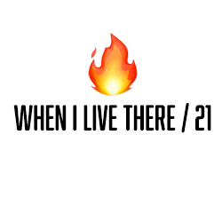

Behind the scenes
-
-
BABY DONG
평소 앨범을 볼 일이 없었는데, 이번 과제를 통해 오랜만에 보게 되는 계기가 되었다.
물론 앨범에는 유치원 시절 뿐 아니라 초등학교, 중학교, 고등학교 시절이 다 있었지만 나의 관한 이야기로는 유치원 시절을 풀어 보고 싶었다.
왜냐면 그때가 제일 귀여웠던 거 같다. 시기별로 가장 '무엇~' 했던 것은 다르지만 이번엔 귀여운 걸 보여주고 싶었다.
다른 시기도 짧게 글로 풀어보자면 초등학교 때는 가장 용감했고, 중학교 때는 가장 행복했다, 마지막 고등학교는 가장 힘들었던 시기여서 별로 사진은 많지 않다.
-

-
WHEN I LIVE THERE / 21
21살, 혼자 호주로 떠났던 날.
그 날은 잊을 수 없다. 아침에도 부모님과 티격태격하며 나왔고 공항에서 출국 심사 마치고 다른 터미널로 이동하는 그 순간 너무 무서워서 눈물이 났다. 이제 진짜
혼자라서. 처음 겪어보는 일이라 너무 무서웠다. 하지만 난 강하니까 금방 추스리고 비행기에서 또 울었다 ㅋㅋ
그렇게 호주에 도착한 날, 언제 울었냐는 듯 너무 신기하고 기뻤다. 호주에서 많은 것을 경험하고 느꼈지만 '다시 할래?' 하면 좀 생각해볼 것이다.
왜냐면 너무 힘들었으니까.
-
-
BEHIND THE SCENECS